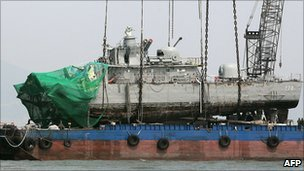
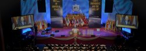
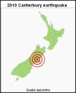
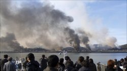

2010
2010 Motto: "Mansei för enigheten med Sanna Föräldrars rena hjärtan och med alla deras segrar i den kosmiska sabbatens rike centrerat på Sann kärlek"På SFars:s födelsedag bestämmer han att 13:e dagen första himmelska kalendermånaden år 2013 skall vara startpunkten för Nationen av kosmisk fred och enighet

Världen:
I mars dör 46 flottister när en sydkoreansk korvett sänks av en nordkoreansk torpedattack
utanför ön Baegnyeong.
I april, när det sydkoreanska flottfartyget Cheonan sänktes av en påstådd nordkoreansk torpedattack,
uppmanade pastor Moon till återhållsamhet under en rundtur i större koreanska städer och höll speciella
Seunghwa-uppstigningsgudstjänster för de 46 sydkoreanska sjömän som dödades i attacken.
"Till slut kan de problem som drabbar mänskligheten bara lösas genom en ideologi baserad på Guds sanna kärlek",
sa han. "Samtidigt måste vi vara angelägna om att befria Guds sörjande hjärta,
för den Himmelske föräldern som förlorade sina älskade barn.
Hur många av er har tillbringat dagar och nätter i tårar och längtat efter att trösta vår Fader i himlen?"
10 April 2010, Polskt militärt passagerarplan Tu-154 kraschar nära staden Smolensk, Ryssland, dödar alla 96 personer ombord. Dessa inkluderade den polske presidenten, polska regeringstjänstemän, 15 medlemmar av det polska parlamentet, högt uppsatta medlemmar av det polska prästerskapet och anhöriga till offren för massakern i Katyn. De var på väg från Warszawa för delta i ett arrangemang som markerade 70-årsdagen av massakern.
I Södertälje går syster Marika, 53 är gammal, och Tommys hustru, över till andliga världen.
Våren 2010
True Fathers Biography publicerad på engelska i bokform.
(på nätet sedan nov 2009)
På svenska

juni
Brittisk tidningsartikel i Sun 24 juni 2010

8 juli 2010 Under 2010 och 2011, upprepade Far samma sak hela tiden.
"En församling för att etablera de Sanna föräldrarna över himmel, jord och mänsklighet,
förkunnar som Guds förkroppsligande, inför världen."
Vi höll detta möte den 8:e juli 2010 i Korea, 24 juli 2010 i USA, 23 aug 2010 i Israel, med samma text, 22 november,
2010 i New York den 27 november 2010 i Las Vegas och 4 december, 2010 i Seoul, SydKorea, alla med samma titel.
När han gjorde Hoon Dok Hwe, läste han alltid den här texten. Varför upprepade han det?
Han gjorde aldrig något sådant tidigare. Detta var så viktigt.
okt 1200 par gifter sig en lördag i Välsignelseceremoni Korea
Pastor Sun Myung Moon, kommer på söndag 10 oktober 2010, att presidera över en Välsignelsevigsel med den
officiell titel "10.14 Välsignelseakt baserad på slutförandet av etablerandet/bosättningen av Sanna Föräldrar
över himmel, jord och mänskligheten", på Sun Moon universitetets campus i Cheonan, Korea. Evenemanget kommer
att direktsånds över Internet.
Omkring 20.000 personer väntas delta i den planerade ceremonin som börjar på söndag morgon.
okt 10 2010
I matchningen inför Välsignelsen; matchade inte Sanna föräldrar direkt som tidigare. De lät kandidaterna själva
bestämma enligt Sanna föräldrars vägledning, sin partner inför Sanna föräldrar.
Det innebär att vi gick in i ett direkt herravälde likt Adam och Eva som före fallet direkt kunde bestämma sin
partner inför Gud. Vi kan säga att det är en underbar välsignelse. "Han betonade att Guds försyn gick in i en ny
nivå."
Link
sep Kära syster Maija, som blev medlem i Stockholm 1979, gick vidare till andliga världen!



4 Sep, 2010 Världen: Canterbury jordbävningen (även känd som Christchurch eller Darfield jordbävningen) var en 7.1 magnitude jordbävning, som slog till på Nya Zeelands sydö kl 04:35 den 4 september 2010.

Spänningen i världen ökar dramatiskt!

Den 28 februari kallade pappa plötsligt till en 120-dagars workshop i Korea.
Ingen förstod hur brådskande tiden var. I år är det 60 år sedan Koreakriget.
Under denna 120-dagars workshop attackerades och sjönk ett koreanskt örlogsfartyg,
Cheonan, nära den omtvistade sjögränsen mot Nordkorea, vilket dödade 46 sjömän ombord.
Plötsligt är Koreahalvön fångad i spänningen kring ett möjligt krig.
Enligt Far initierades 120-dagars workshopen för att skapa förutsättningarna
för att undvika att ytterligare krig bryter ut på Koreahalvön.
Det är tack vare denna 120-dagars workshop som just avslutats som ett krig kunde förhindras mellan Nord- och Sydkorea. Inte ens sjunkningen av örlogsfartyget orsakade krig. Eftersom dessa ledare som gick igenom 120-dagars workshopen och förenade sig med Sanna Föräldrar och fortsatte troget genom de 120 dagarna (från Storbritannien: Constance Rennie och Haesul Fagcang) kunde ett viktigt villkor ställas av Sanna Föräldrar.
Under denna period initierade Far också Fredens arv.
Det är en ceremoni för uppståndelse och välsignelse för nuvarande ledare och offer av
individer som nyligen gått bort.
Både Legacy of Peace och 120-dagars workshop är sätt för Far att bygga en andlig grund
inför D-dagen den 13 januari 2013. Mindre än tre år återstår till den dagen.
New ODP=Original Divine Principle Workshop, i Helsingfors! 4-6 Dec
Dec 2010 Världen:Australien
Tusentals fler människor förbereder sig för att evakuera sina hem då
en av Australiens värsta översvämningar fortsätter i staten Queensland.
Största antalet dödade i Mexico. 90% av alla dödade, har förbindelser
med narkotika-karteller.